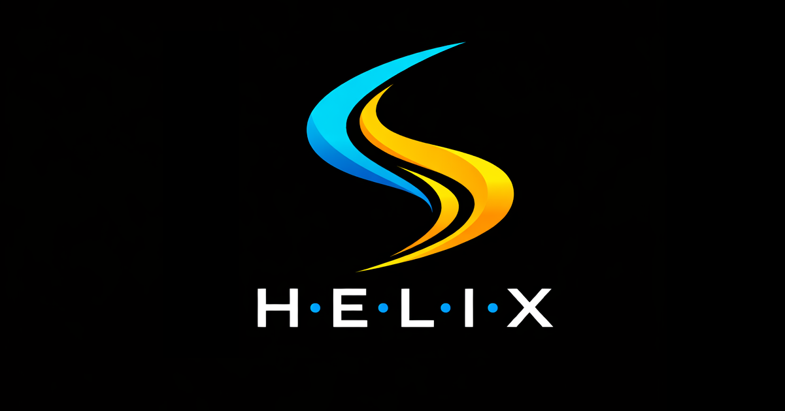

HELIX is two things at once: a curated machine-learning & AI paper repository you can browse here, and a research program that treats an ATLAS event as language and a cutflow as a thermodynamic process — applying NLP techniques and information theory to detector data.

The website you are in now: a curated, living library of the papers and references that anchor the project, sorted into the five H·E·L·I·X sectors. Each sector carries its articles, working notes, and goals.
Browse by sector, search the whole registry by all text, subject, or author, and open or download any reference straight from the viewer.
The research program: apply self-supervised NLP techniques and information theory to ATLAS detector data — reading an event as language and a cutflow as a thermodynamic process.
The pipeline runs from Evt2Vec embeddings through the CutFormer attention stage to a maximum-entropy uncertainty floor, with a Bayesian last layer for epistemic uncertainty.
The InfoNCE softmax has the exact shape of a Boltzmann distribution: the denominator is the partition function Z and the temperature τ plays the role of 1/β. That the softmax looks thermodynamic is recognized prior art — what is HELIX's is the binding: tying that Boltzmann form to the Bayesian partition function so one and the same Z serves as contrastive normalizer, Bayesian evidence, and the source of a maximum-entropy uncertainty floor.
Shannon defined information as surprise (−log p); Jaynes made thermodynamics a theory of inference via maximum entropy; the partition-function formalism makes the Z ↔ Bayesian-evidence bridge rigorous.
The distributional hypothesis became practical with word2vec; contrastive self-supervision (InfoNCE, SimCLR) generalized it; JetCLR carried it into high-energy physics.
Descends from the ABCD method; ABCDisCo and CWoLa automated and stress-tested data-driven background estimation, while WEAT/WEFAT measure learned bias.
Dropout-as-Bayesian legitimized practical Bayesian deep learning; the partition function ties entropy and effective dimension back to the spine.
One partition function spanning the embedding (Goal 1), the background handle (Goal 2), and the epistemic floor (Goal 3) of a collider search — the binding of established threads through a single Z. The load-bearing wall is InfoNCE; the foundation is the prior bet that detector data carries enough language-like structure for the machinery to transfer at all.